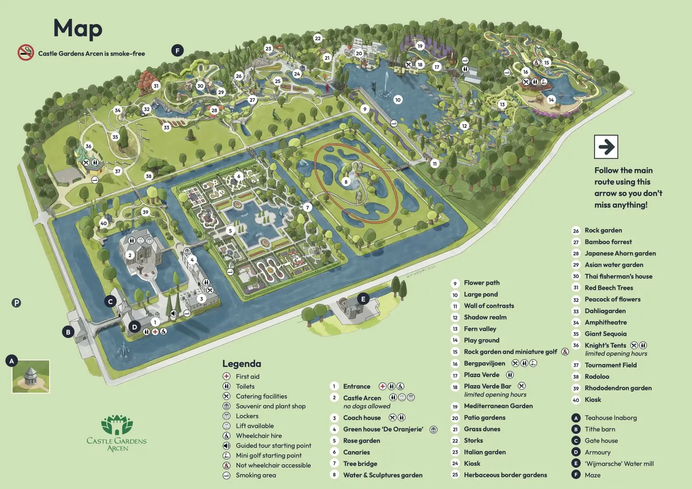

Grounds Map
The official Elfia map: 13 themed areas and three embassies spread across Castle Gardens Arcen. Every name listed below so you can search it, read it on a small screen, or have it read aloud.

Castle Gardens Arcen is smoke-free — smoking is only allowed in the marked smoking areas.
The map uses icons rather than numbers for facilities; which one sits by which area is listed below under Facilities by area.
Facilities key
The 13 themed areas
Embassies
Three unnumbered meeting spots, spread across the grounds.
Finding what you need
First aid
Two posts: by Iron Fjord (3) and on the south side by the large pond, between The Garden Of Eve (9) and Folk Faire (11).
Toilets & water
Toilets by areas 1, 2, 3, 11, 12 and 13, each with a wheelchair-accessible one. There is a drinking-water tap at Iron Fjord (3).
Food & drink
Catering at 2, 4, 6, 7, 11, 12 and 13; the Elfia Elixir Bar at 5, 7, 10 and 11. Every stall is listed on Food & drink.
Lockers, changing rooms & repairs
All three are at the entrance, around Border to Fantasy (1). The information point and Elfia Treasures are by Music Court (8).
Accessibility
Every toilet block on the map also has a wheelchair-accessible one. See also accessible parking.
Smoking
The castle gardens are smoke-free. Smoking areas are dotted around 1, 2, 3, 7, 8, 9, 11 and 12.
Facilities by area
Read off the map: which icons sit by which numbered area, so you need not zoom into the image. The map does not explicitly tie an icon to an area — this is the nearest one each time, so have a look around if you do not spot it.